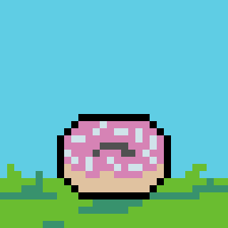

Donut Man 900

About This Image
This was a little pixel animation of a donut I did, that I turned into a GIF, I created a year ago. I was learning about the stretchiness and bounciness when drawing or creating a sprite to exaggerate the current action or foreshadow the next action.
Why GIF Format?
I'm using the GIF since I drew a sprite sheet. It was for a little animation so the GIF format was able to show my work as an image instead of a video.
Image source: Original Drawing by [The Student]